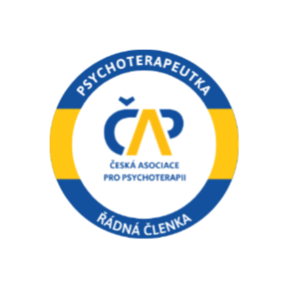

Psychologické poradenství a diagnostika
Poradenská psychoterapie
Psychoterapie a poradenství
„Své klienty vnímám jako experty na svůj život. Mojí úlohou je vytvářet bezpečný prostor, kde mohou objevovat možnosti a řešení, která pro ně fungují.“
Ve své praxi se věnuji psychologickému poradenství a terapii. Nabízím bezpečný prostor, kde můžete otevřeně mluvit o svých tématech a hledat cestu k větší spokojenosti a rovnováze.
S čím se na mě můžete obrátit?
- Osobní rozvoj a vztah k sobě samému
- Pracovní uplatnění a životní orientace
- Partnerské a rodinné vztahy
- Dlouhodobá nespokojenost, ztráta motivace a energie
- Konflikty v partnerství, rodičovství či na pracovišti
- Psychické obtíže: smutek, deprese, úzkosti, panické stavy, problémy se zvládáním emocí, následky traumatických událostí, …

Jsem členkou České asociace pro psychoterapii (ČAP).Supervize
Supervizi vnímám jako kolegiální prostor pro reflektivní prožitek vaší profesní praxe, objevování nových perspektiv a podporu osobního i odborného růstu. Umožňuje sdílet zkušenosti, zpracovávat náročné situace a nacházet cesty, které jsou v souladu s vaší profesní identitou.
Nabízím spolupráci formou
Supervize může probíhat jako
Je určena psychologům, terapeutům, pedagogům a dalším odborníkům v pomáhajících profesích, kteří chtějí prohlubovat svou profesní praxi a zároveň se vědomě rozvíjet.
O mně

Vzdělání
- 1995–2000 Vysokoškolské vzděláníTrnavská univerzita v Trnave, magisterský titul v oboru psychologie
- 2001–2006 Psychoterapeutický výcvikIGT Praha, Gestalt terapie
- 2011–2013 Postgraduální kurz v gestalt terapiiIGT Praha, Gestalt přístup v klinické praxi
- 2022 Dialog, Gestalt studia: Lynne JacobsDialogický přístup v Gestalt terapii
- 2024–2026 Supervizní výcvik v gestalt modalitěGestalt plus, s.r.o.
… a další kurzy, workshopy, přednášky v rámci kontinuálního vzdělávání (v oblasti poruchy příjmu potravy, práce v pískovišti, neurověd,..)
Odborná praxe
- 2013 – dosud OSVČPsychologické poradenství, terapie a diagnostika, poradenská psychoterapie
- 2020 – dosud Akropolis z.s, Uherské HradištěSpolupráce v rámci projektu Rodina
- 2018 – 2020 ZDVOP ZlínSupervize
- 2016 – 2017 MÚ Uherské Hradiště, OSPODPsychologické poradenství, terapie, diagnostika
- 2006 – 2022 Elio, z.s., PrahaLektorská činnost, supervize, metodická činnost. Vedoucí týmu. Psychologické poradenství, terapie a diagnostika.
Publikační činnost
- 2013 Nejsme na to samiKohnová, J., Nováčková, M., Irrová, L., Pejchalová, M., Praha, Elio
- 2012 Mezinárodní konference pozitivní psychologie v ČR, BrnoZkušenosti s využíváním pozitivní psychologie
- 2012 Krajská konference primární prevence rizikového chování, České BudějovicePrevence jako komplexní a kontinuální činnost
Aktuální spolupráce
Spolupracuji s organizacemi a pojišťovnami, které podporují psychologickou pomoc a poradenství.
Ceník
Terapie i supervize probíhají formou osobního setkání nebo on-line.
Platba na účet
Spolupráce s pojišťovnami
Příspěvek na psychoterapii poskytují tyto pojišťovny:
- VZP-111 Všeobecná zdravotní pojišťovna
- ČPZP-205 Česká průmyslová zdravotní pojišťovna
- OZP-207 Oborová zdravotní pojišťovna
- ZP Škoda-209 Zaměstnanecká pojišťovna Škoda
- ZPMV-211 Zdravotní pojišťovna ministerstva vnitra České republiky
- RBP-213 Revírní bratrská pokladna, zdravotní pojišťovna
Příspěvky se pohybují řádově od 2–5 tis. Kč ročně.
Storno podmínky
Pokud zrušíte nebo přesunete domluvený termín méně než 48 hodin před jeho začátkem, případně se na terapii nedostavíte, bude účtován storno poplatek ve výši 100 % ceny sjednané konzultace. Tento poplatek je účtován proto, že takto uvolněný termín již nelze nabídnout dalším klientům.
Kontakt
Pro objednání pište/volejte na +420 775 200 565 nebo pište na jana.kohnova@gmail.com. K dispozici je také WhatsApp.
686 01 Uherské HradištěZlínský kraj, Česká republika